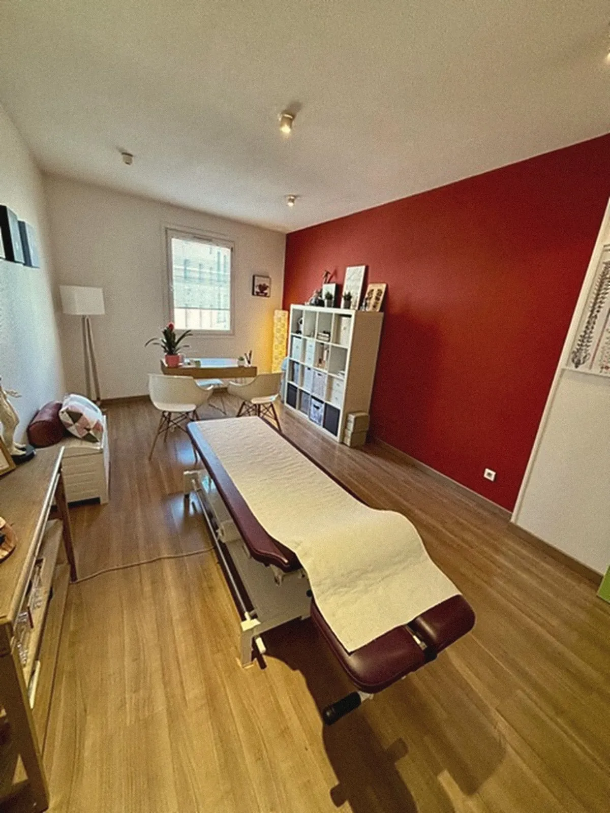
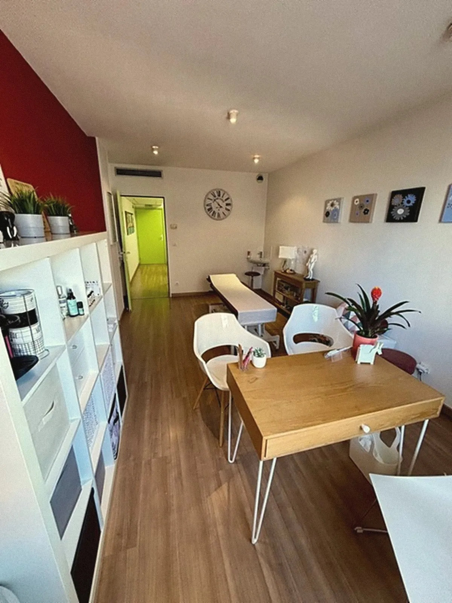
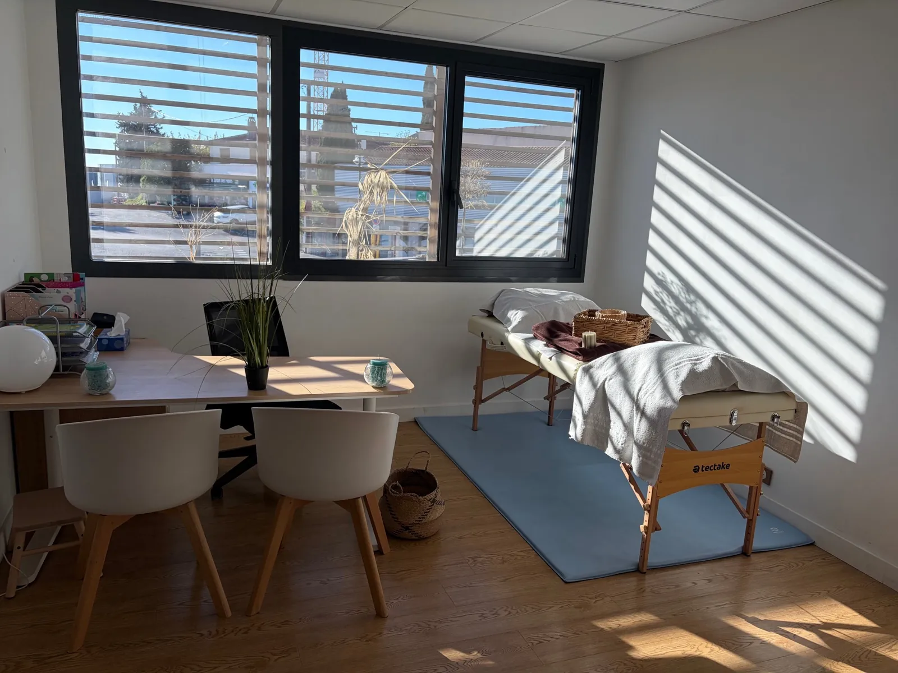

Réflexologue à Saint-Raphaël et Puget-sur-Argens
Le corps se relâche,
l'esprit respire.
Marie Gosselin vous accueille depuis 17 ans à Saint-Raphaël et à Puget-sur-Argens pour des soins doux et sur mesure : réflexologie, ostéothérapie, drainage lymphatique, kobido, madérothérapie et shiatsu.
Faire défiler

17ans d'expérience en réflexologie
Par où commencer ?
Un besoin, un soin.

Le cabinet · place CoulletLe cabinet
Un lieu calme, en plein centre de Saint-Raphaël
Dans l'immeuble Le Saint Louis, le cabinet a été pensé comme une parenthèse : lumière douce, couleurs chaudes, et une salle d'attente au calme.
Découvrir Marie et le cabinet17ans d'expérience
7soins proposés
Mercredi, vendredi et samedi à Saint-RaphaëlLundi, mardi et jeudi à Puget-sur-Argens · fermé le dimanche · horaires détaillés

Le cabinet de Puget-sur-ArgensDeux cabinets
Saint-Raphaël, en plein centre, et Puget-sur-Argens, pratique en sortant du travail. Séances à domicile possibles selon les disponibilités.
« Chaque séance est un moment pour vous, à votre rythme. »
Marie Gosselin
StressSommeilSciatiqueLombaires & nuqueTendinitesConfort digestifMénopauseJambes lourdesRécupération sportive
Ces soins sont des pratiques de bien-être. Ils accompagnent mais ne remplacent pas un traitement médical.